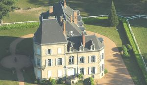
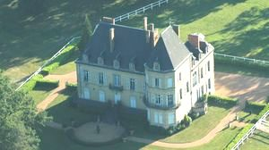
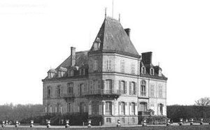
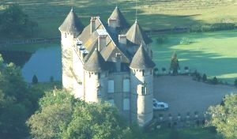
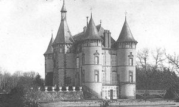
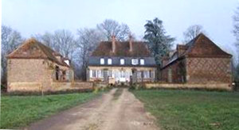
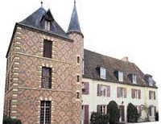
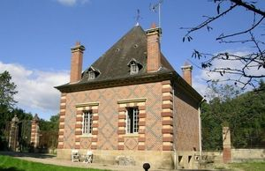

Recensement Jean-Claude Truffet








| Département | 03 — Allier |
| Canton | Yzeure |
| Commune | Trevol |
| Type d'édifice | Château |
| Période d'origine | XIV-XVII |
Cinq châteaux à Trévol; Avrilly (voir article) de Bédaures du XIXe siècle agence immobilière , de Démoret du XIV-XIXe siècle néo-gothiques, de Demoux du XVIIe siècle et de Mirabeau du XVIIe siècle. DEMORET, était au XIVe siècle le fief d'une famille de ce nom. Jean Demoret, chevalier, fut procureur général du Bourbonnais. En 1482, le seigneur de Demoret était Antoine de Montjournal, écuyer, conseiller et premier chambellan du cardinal de Bourbon. Il ne conserva pas longtemps le fief puisqu'en 1503, le nouveau seigneur en est Pierre de Bonnay, également seigneur de Bessat et de Bonnay. En 1682 Claude Coiffier était seigneur des Nonettes et de Demoret. Le 7 février 1790, Jean Louis Coiffier de Demoret, chevalier de St Louis, fut élu maire de la nouvelle municipalité par les citoyens actif de la paroisse. DEMOUX, en 1631 est mentionné Antoine, en 1687 Jean Feydeau . Les Feydeau y résidèrent longtemps puis Pierre en 1741. En 1782 c'était Louis Guériot, écuyer, "capitaine d'ouvriers" au corps royal d'artillerie, qui était seigneur de Demoux. MIREBEAU, en 1367 Guot remanié l'ensemble et au XVIe siècle habité par la famille Mirebeau, passa en 1603 à Jean de l'Aubespin trésorier de France, puis à François Dubuisson écuyer . En 1741 Pierre de Freydeau chevalier seigneur de Mirebeau et en 1781 Antoine Chevret seigneur fermier épousa Marguerite Fiolin fille de feu Antoine et gardèrent la propriété jusqu'à la Révolution.
Demoret, est un logis néo-gothique, pourvu de douves, au XIXe siècle, l'ancien château dont la façade était située au Nord fut reconstruit sur le même emplacement, la façade orientée à l'Ouest. Pour son édification qui s'échelonna sur quinze années, le château a subi les affres d'un incendie le 25 avril 1975, le feu anéantissant la magnifique charpente en châtaignier, la totalité du deuxième étage et les combles qui comportaient en façade, outre un campanile sur la tour centrale, quatre lucarnes en bois sculpté. La hauteur de la toiture a dû être réduite de quatre mètres. Demoux est une gentilhommière au toit à la Mansart. La cour est délimitée par des communs. La pierre porte les initiales de Jean Feydeau et date de 1687. Les fossés sont encore en eau. Mirabeau est un domaine constitué du château, de la chapelle, de la cuisine, d'une grange autour d'une cour, d'une basse-cour entourée de bâtiments agricoles sur trois côtés et un parc avec étang. Le château est constitué d'un corps de logis unique du XVIe ou XVIIe siècle auquel ont été ajoutés au XIXe siècle un pavillon à base carré à chaque extrémités. Ces pavillons, imitant les constructions du début du XVIIe, sont édifiés en briques polychromes et comportent trois niveaux. La porte d'entrée des deux édifices ouvre vers le château. Le décor des portes témoigne des tendances baroques du début du XVIIe siècle. Le bâtiment nord est une ancienne cuisine.
Famille de Jean Demoret Famille de Jean Feydeau"
Château de Bédaures, de Démoret, de Démoux, de Mirabeau et le pavillon d'Avrilly à Trévol